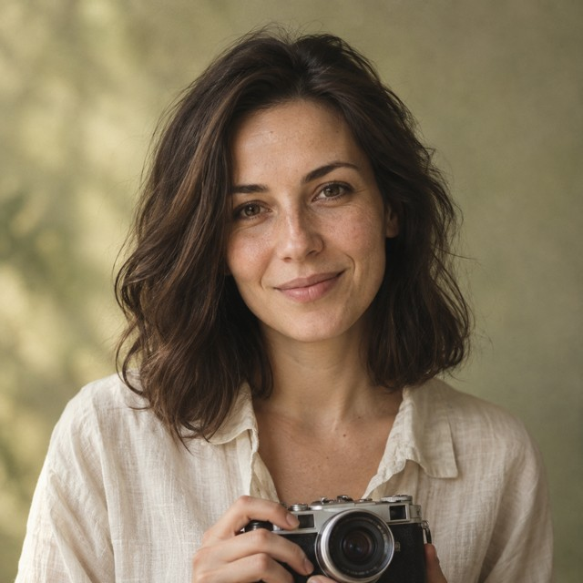
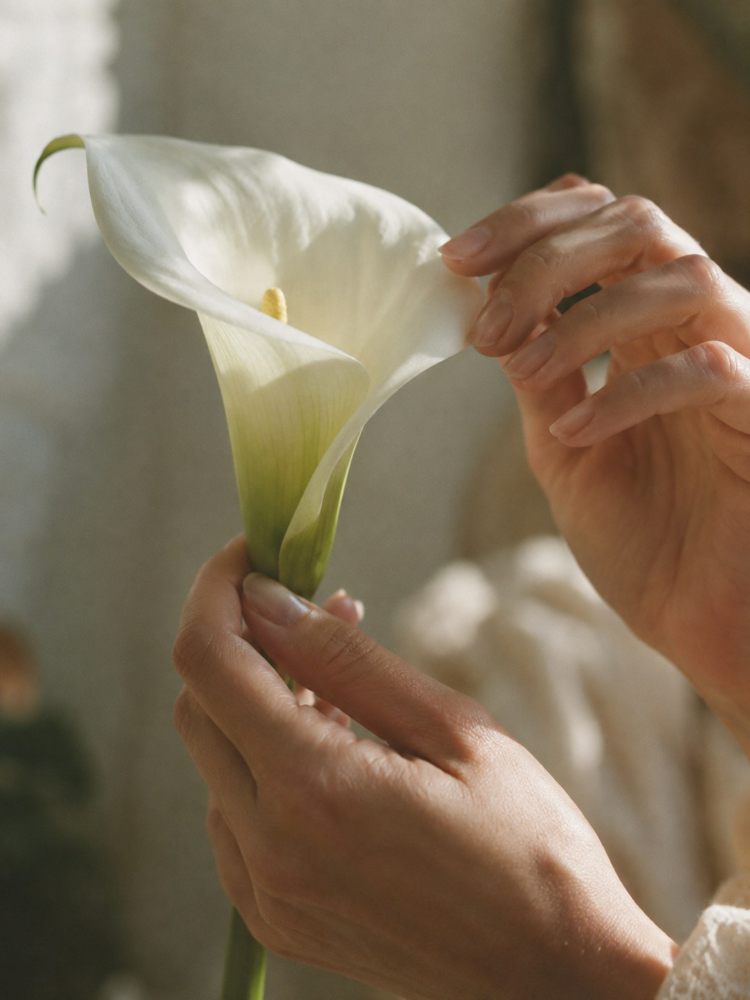

Just You
Portrait session
1 hour · 40 signature-edited photographs
A conversation, a walk, a new way to see yourself.

MARTA KOVALPHOTOGRAPHERPORTRAITS & STORIES
Portrait sessions and stories for two.In natural light. At your own pace.
I capture the feeling between the perfect frames.
FEEL MORE ↓
Just be here. Breathe. Feel. I’ll hold on to the light in you.Every story has its own warmth.
Every frame leaves an afterglow.
Some things can’t be explained.
Only held on to.
I notice beauty in the little things: a hand moving, a pause, the way you laugh when you forget about the camera.
For me, a session begins with trust. With a conversation, your favourite music, and the freedom to be yourself.
We’ll find the light, the place, the mood.
All you need to do is show up.
Nowhere to rush.
Just be.
Portrait session
1 hour · 40 signature-edited photographs
A conversation, a walk, a new way to see yourself.
A story for two
1.5 hours · 60 signature-edited photographs
Your little rituals and your biggest feelings.
Creative & brand photography
A tailored session
From the first spark of an idea to a visual language of your own.
Styling and location guidance included in every session. Your photos delivered within 14 days. Studio hire is charged separately.
Tell me how you want to feel.
That’s where our story begins.